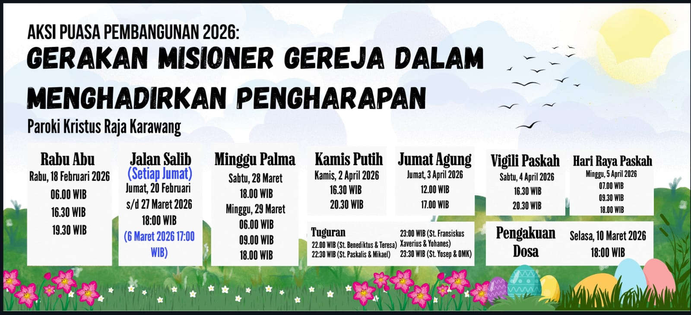

Salve saudara/i yang terkasih

Pengumuman


Filosofi Logo Paroki
Makna & Simbolisme
Setiap simbol menyimpan
makna yang dalam
makna yang dalam
Ketuk logo untuk mengungkap
Lingkaran Duri
Lambang Mahkota Duri, simbol pengorbanan Yesus
Bingkai Lingkaran
Simbol kehidupan yang selalu berputar
Warna Merah
Lambang darah dan keberanian Kristus
Dua Tangkai Daun Palem
Simbol penyambutan dan kegembiraan umat
Warna Hitam
Lambang kesederhanaan dari hati yang rendah
Huruf P dan X
Pax Christi – Damai Kristus